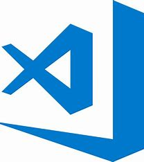

¿Qué es VSC? - Concepto
Visual Studio Code es un editor de código fuente desarrollado por Microsoft para Windows, Linux, macOS y Web. Incluye soporte para la depuración, control integrado de Git, resaltado de sintaxis, finalización inteligente de código, fragmentos y refactorización de código.
Fuente de Wikipedia
Proceso de instalación
El editor de texto VSCode ha sido creado y es mantenido por Microsoft. Lo distribuye con licencia Open Source y por lo tanto en forma gratuita.
Descarga el instalador:Ve a la página oficial de Visual Studio Code.
1. Haz clic en el botón de descarga para Windows.
2. Selecciona la versión adecuada según tu sistema operativo (32 o 64 bits).
3. Ejecuta el archivo de instalación:
4. Abre el archivo.exeque descargaste.
5. Acepta el acuerdo de licencia.Configura las opciones de instalación:Indica la ruta donde deseas instalar Visual Studio Code (por defecto, se instala enProgram Files).
6. Deja las opciones predeterminadas en la siguiente pantalla y haz clic en “Siguiente”.Instala el software:Haz clic en “Instalar” para comenzar la instalación.
7. Finaliza la instalación:Una vez finalizada la instalación, haz clic en el botón “Finalizar”.
8. Inicia Visual Studio Code:Busca el icono que se ha creado en tu escritorio o menú de inicio.
¡Listo! Ahora puedes personalizar tu editor y comenzar a programar
PULSE LA IMAGEN PARA COMENZAR LA INSTALACION
